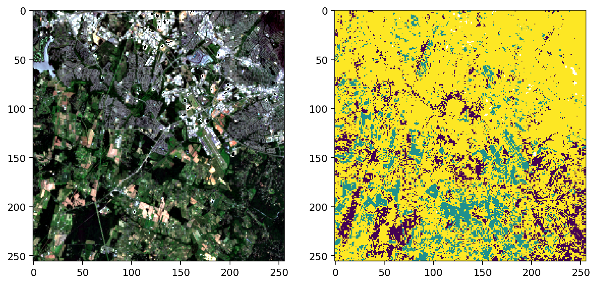
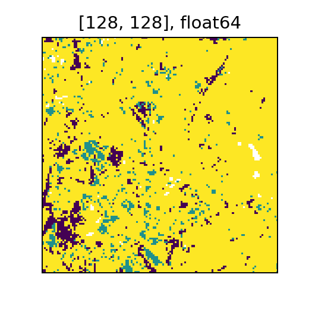

Supervised Machine Learning
In this example we will demonstrate how to fit and score a supervised learning model with a sample of Sentinel-2 data and hand-drawn vector labels over different land cover types.
Create and Read Raster Catalog
The first step is to create a Spark DataFrame containing our imagery data. To achieve that we will create a catalog DataFrame. In the catalog, each row represents a distinct area and time, and each column is the URI to a band’s image product. In this example our catalog just has one row. After reading the catalog, the resulting Spark DataFrame may have many rows per URI, with a column corresponding to each band.
The imagery for feature data will come from eleven bands of 60 meter resolution Sentinel-2 imagery. We also will use the scene classification (SCL) data to identify high quality, non-cloudy pixels.
uri_base = 's3://s22s-test-geotiffs/luray_snp/{}.tif'
bands = ['B01', 'B02', 'B03', 'B04', 'B05', 'B06', 'B07', 'B08', 'B09', 'B11', 'B12']
cols = ['SCL'] + bands
catalog_df = pd.DataFrame([
{b: uri_base.format(b) for b in cols}
])
df = spark.read.raster(catalog_df, catalog_col_names=cols, tile_dimensions=(128, 128)) \
.repartition(100)
df = df.select(
rf_crs(df.B01).alias('crs'),
rf_extent(df.B01).alias('extent'),
rf_tile(df.SCL).alias('scl'),
rf_tile(df.B01).alias('B01'),
rf_tile(df.B02).alias('B02'),
rf_tile(df.B03).alias('B03'),
rf_tile(df.B04).alias('B04'),
rf_tile(df.B05).alias('B05'),
rf_tile(df.B06).alias('B06'),
rf_tile(df.B07).alias('B07'),
rf_tile(df.B08).alias('B08'),
rf_tile(df.B09).alias('B09'),
rf_tile(df.B11).alias('B11'),
rf_tile(df.B12).alias('B12'),
)
df.printSchema()
root
|-- crs: struct (nullable = true)
| |-- crsProj4: string (nullable = false)
|-- extent: struct (nullable = true)
| |-- xmin: double (nullable = false)
| |-- ymin: double (nullable = false)
| |-- xmax: double (nullable = false)
| |-- ymax: double (nullable = false)
|-- scl: tile (nullable = true)
|-- B01: tile (nullable = true)
|-- B02: tile (nullable = true)
|-- B03: tile (nullable = true)
|-- B04: tile (nullable = true)
|-- B05: tile (nullable = true)
|-- B06: tile (nullable = true)
|-- B07: tile (nullable = true)
|-- B08: tile (nullable = true)
|-- B09: tile (nullable = true)
|-- B11: tile (nullable = true)
|-- B12: tile (nullable = true)
Data Prep
Label Data
The land classification labels are based on a small set of hand drawn polygons in the GeoJSON file here. The property id indicates the type of land cover in each area. For these integer values, 1 is forest, 2 is cropland, and 3 is developed areas.
We will create a very small Spark DataFrame of the label shapes and then join it to the raster DataFrame. Such joins are typically expensive, but in this case both datasets are quite small. To speed up the join for the small vector DataFrame, we put the broadcast hint on it, which will tell Spark to put a copy of it on each Spark executor.
After the raster and vector data are joined, we will convert the vector shapes into tiles using the rf_rasterize function. This procedure is sometimes called “burning in” a geometry into a raster. The values in the resulting tile cells are the id property of the GeoJSON, which we will use as labels in our supervised learning task. In areas where the geometry does not intersect, the cells will contain NoData.
crses = df.select('crs.crsProj4').distinct().collect()
print('Found ', len(crses), 'distinct CRS.')
crs = crses[0][0]
from pyspark import SparkFiles
spark.sparkContext.addFile('https://github.com/locationtech/rasterframes/raw/develop/pyrasterframes/src/test/resources/luray-labels.geojson')
label_df = spark.read.geojson(SparkFiles.get('luray-labels.geojson')) \
.select('id', st_reproject('geometry', lit('EPSG:4326'), lit(crs)).alias('geometry')) \
.hint('broadcast')
df_joined = df.join(label_df, st_intersects(st_geometry('extent'), 'geometry')) \
.withColumn('dims', rf_dimensions('B01'))
df_labeled = df_joined.withColumn('label',
rf_rasterize('geometry', st_geometry('extent'), 'id', 'dims.cols', 'dims.rows')
)
Found 1 distinct CRS.
Masking Poor Quality Cells
To filter only for good quality pixels, we follow roughly the same procedure as demonstrated in the quality masking section of the chapter on NoData. Instead of actually setting NoData values in the unwanted cells of any of the imagery bands, we will just filter out the mask cell values later in the process.
from pyspark.sql.functions import lit
mask_part = df_labeled \
.withColumn('nodata', rf_local_equal('scl', lit(0))) \
.withColumn('defect', rf_local_equal('scl', lit(1))) \
.withColumn('cloud8', rf_local_equal('scl', lit(8))) \
.withColumn('cloud9', rf_local_equal('scl', lit(9))) \
.withColumn('cirrus', rf_local_equal('scl', lit(10)))
df_mask_inv = mask_part \
.withColumn('mask', rf_local_add('nodata', 'defect')) \
.withColumn('mask', rf_local_add('mask', 'cloud8')) \
.withColumn('mask', rf_local_add('mask', 'cloud9')) \
.withColumn('mask', rf_local_add('mask', 'cirrus')) \
.drop('nodata', 'defect', 'cloud8', 'cloud9', 'cirrus')
# at this point the mask contains 0 for good cells and 1 for defect, etc
# convert cell type and set value 1 to NoData
df_mask = df_mask_inv.withColumn('mask',
rf_with_no_data(rf_convert_cell_type('mask', 'uint8'), 1.0)
)
df_mask.printSchema()
root
|-- crs: struct (nullable = true)
| |-- crsProj4: string (nullable = false)
|-- extent: struct (nullable = true)
| |-- xmin: double (nullable = false)
| |-- ymin: double (nullable = false)
| |-- xmax: double (nullable = false)
| |-- ymax: double (nullable = false)
|-- scl: tile (nullable = true)
|-- B01: tile (nullable = true)
|-- B02: tile (nullable = true)
|-- B03: tile (nullable = true)
|-- B04: tile (nullable = true)
|-- B05: tile (nullable = true)
|-- B06: tile (nullable = true)
|-- B07: tile (nullable = true)
|-- B08: tile (nullable = true)
|-- B09: tile (nullable = true)
|-- B11: tile (nullable = true)
|-- B12: tile (nullable = true)
|-- id: long (nullable = true)
|-- geometry: geometry (nullable = true)
|-- dims: struct (nullable = true)
| |-- cols: short (nullable = false)
| |-- rows: short (nullable = false)
|-- label: tile (nullable = true)
|-- mask: tile (nullable = true)
Create ML Pipeline
We import various Spark components that we need to construct our Pipeline. These are the objects that will work in sequence to conduct the data preparation and modeling.
from pyrasterframes import TileExploder
from pyrasterframes.rf_types import NoDataFilter
from pyspark.ml.feature import VectorAssembler
from pyspark.ml.classification import DecisionTreeClassifier
from pyspark.ml.evaluation import MulticlassClassificationEvaluator
from pyspark.ml import Pipeline
SparkML requires that each observation be in its own row, and those observations be packed into a single Vector object. The first step is to “explode” the tiles into a single row per cell or pixel with the TileExploder (see also rf_explode_tiles). If a tile cell contains a NoData it will become a null value after the exploder stage. Then we use the NoDataFilter to filter out any rows that missing or null values, which will cause an error during training. Finally we use the SparkML VectorAssembler to create that Vector.
Recall above we set undesirable pixels to NoData, so the NoDataFilter will remove them at this stage. We apply the filter to the mask column and the label column, the latter being used during training. When it is time to score the model, the pipeline will ignore the fact that there is no label column on the input DataFrame.
exploder = TileExploder()
noDataFilter = NoDataFilter() \
.setInputCols(['label', 'mask'])
assembler = VectorAssembler() \
.setInputCols(bands) \
.setOutputCol("features")
We are going to use a decision tree for classification. You can swap out one of the other multi-class classification algorithms if you like. With the algorithm selected we can assemble our modeling pipeline.
classifier = DecisionTreeClassifier() \
.setLabelCol('label') \
.setFeaturesCol(assembler.getOutputCol())
pipeline = Pipeline() \
.setStages([exploder, noDataFilter, assembler, classifier])
pipeline.getStages()
[TileExploder_42cea46a93c9e2430563,
NoDataFilter_484da89c0de9b0c29fed,
VectorAssembler_4e79879c792200cd8ec9,
DecisionTreeClassifier_41fdad4da4cad4242868]
Train the Model
The next step is to actually run each step of the Pipeline we created, including fitting the decision tree model. We filter the DataFrame for only tiles intersecting the label raster because the label shapes are relatively sparse over the imagery. It would be logically equivalent to either include or exclude thi step, but it is more efficient to filter because it will mean less data going into the pipeline.
model_input = df_mask.filter(rf_tile_sum('label') > 0).cache()
model = pipeline.fit(model_input)
Model Evaluation
To view the model’s performance, we first call the pipeline’s transform method on the training dataset. This transformed dataset will have the model’s prediction included in each row. We next construct an evaluator and pass it the transformed dataset to easily compute the performance metric. We can also create custom metrics using a variety of DataFrame or SQL transformations.
prediction_df = model.transform(df_mask) \
.drop(assembler.getOutputCol()).cache()
prediction_df.printSchema()
eval = MulticlassClassificationEvaluator(
predictionCol=classifier.getPredictionCol(),
labelCol=classifier.getLabelCol(),
metricName='accuracy'
)
accuracy = eval.evaluate(prediction_df)
print("\nAccuracy:", accuracy)
root
|-- crs: struct (nullable = true)
| |-- crsProj4: string (nullable = false)
|-- extent: struct (nullable = true)
| |-- xmin: double (nullable = false)
| |-- ymin: double (nullable = false)
| |-- xmax: double (nullable = false)
| |-- ymax: double (nullable = false)
|-- id: long (nullable = true)
|-- geometry: geometry (nullable = true)
|-- dims: struct (nullable = true)
| |-- cols: short (nullable = false)
| |-- rows: short (nullable = false)
|-- column_index: integer (nullable = false)
|-- row_index: integer (nullable = false)
|-- scl: double (nullable = false)
|-- B01: double (nullable = false)
|-- B02: double (nullable = false)
|-- B03: double (nullable = false)
|-- B04: double (nullable = false)
|-- B05: double (nullable = false)
|-- B06: double (nullable = false)
|-- B07: double (nullable = false)
|-- B08: double (nullable = false)
|-- B09: double (nullable = false)
|-- B11: double (nullable = false)
|-- B12: double (nullable = false)
|-- label: double (nullable = false)
|-- mask: double (nullable = false)
|-- rawPrediction: vector (nullable = true)
|-- probability: vector (nullable = true)
|-- prediction: double (nullable = false)
Accuracy: 0.9742420788693869
As an example of using the flexibility provided by DataFrames, the code below computes and displays the confusion matrix.
cnf_mtrx = prediction_df.groupBy(classifier.getPredictionCol()) \
.pivot(classifier.getLabelCol()) \
.count() \
.sort(classifier.getPredictionCol())
cnf_mtrx
| prediction | 1.0 | 2.0 | 3.0 |
|---|---|---|---|
| 1.0 | 6620 | 16 | 54 |
| 2.0 | 2 | 1738 | 52 |
| 3.0 | 45 | 170 | 4464 |
Visualize Prediction
Because the pipeline included a TileExploder, we will recreate the tiled data structure. The explosion transformation includes metadata enabling us to recreate the tiles. See the rf_assemble_tile function documentation for more details. In this case, the pipeline is scoring on all areas, regardless of whether they intersect the label polygons. This is simply done by removing the label column, as discussed above.
scored = model.transform(df_mask.drop('label'))
retiled = scored \
.groupBy('extent', 'crs') \
.agg(
rf_assemble_tile('column_index', 'row_index', 'prediction', 128, 128).alias('prediction'),
rf_assemble_tile('column_index', 'row_index', 'B04', 128, 128).alias('red'),
rf_assemble_tile('column_index', 'row_index', 'B03', 128, 128).alias('grn'),
rf_assemble_tile('column_index', 'row_index', 'B02', 128, 128).alias('blu')
)
retiled.printSchema()
root
|-- extent: struct (nullable = true)
| |-- xmin: double (nullable = false)
| |-- ymin: double (nullable = false)
| |-- xmax: double (nullable = false)
| |-- ymax: double (nullable = false)
|-- crs: struct (nullable = true)
| |-- crsProj4: string (nullable = false)
|-- prediction: tile (nullable = true)
|-- red: tile (nullable = true)
|-- grn: tile (nullable = true)
|-- blu: tile (nullable = true)
Take a look at a sample of the resulting output and the corresponding area’s red-green-blue composite image.
sample = retiled \
.select('prediction', rf_rgb_composite('red', 'grn', 'blu').alias('rgb')) \
.sort(-rf_tile_sum(rf_local_equal('prediction', lit(3.0)))) \
.first()
sample_rgb = sample['rgb']
mins = np.nanmin(sample_rgb.cells, axis=(0,1))
plt.imshow((sample_rgb.cells - mins) / (np.nanmax(sample_rgb.cells, axis=(0,1)) - mins))
setup.py:5: RuntimeWarning: overflow encountered in int_scalars
#
<matplotlib.image.AxesImage at 0x114225cd0>

Recall the label coding: 1 is forest (purple), 2 is cropland (green) and 3 is developed areas(yellow).
display(sample['prediction'])
